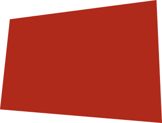

Harmonica
In pop culture
But before we start, how does a harmonica work?
A lot of parts...
Hover over the pieces to see their names
chromatic
→
diatonic
←
→
tremolo
←
This type of harmonica can play semi-tones easily. In this book's context, it refers to either the traditional version (using a slide), or the Tombo's slideless versions. Horn harmonica is a different category altogether and, as of now, it will not be covered (since it's only popular in East Asia, and for Orchestra purposes only). In general, materials for chromatic harmonicas is lacking, regardless of location, and as such, it is usually recommended to be played after one has learned the basics of the 10-hole diatonic or Tremolo harmonica. However, if one manages to find good materials, chromatic harmonicas are just as easy to learn.
It has ten holes which offer the player 19 notes (10 holes times a draw and a blow for each hole minus one repeated note) in a three octave range. The standard diatonic harmonica is designed to allow a player to play chords and melody in a single key. Because they are only designed to be played in a single key at a time, diatonic harmonicas are available in all keys. It is most commonly used in North America and Europe and is a main feature of Blues music.
This version of a tremolo harmonica is the standard variant of diatonic harmonicas in East Asia and have more materials. As such, for beginners in East Asia, this type of harmonica is the best.
1955
a belgian legend

"Het is niet gemakkelijk om met mij samen te leven want ik denk dat ik soms te obsessed ben door mijn mondharmonica."
Chromatic
Toots Thielemans was lid van de circa 25 leden tellende Snorrenclub Antwerpen. Hij werd in 1988 door hen tot "Snor van het Jaar" uitgeroepen.
Master sing & song writer
"The Harmonica is the world’s best-selling musical instrument. You’re welcome."
Diatonic
Almost all of his studio recordings has been original songs. One exception was his self-titled debut which was comprised mainly of standards.
Sesame street
Midnightcowboy
Bluesette
1962
The wonder man
"I never imagined I’d meet Berry Gordy who told me when he first heard me sing, “You know, your singing’s okay, but I like your harmonica playing better."
Chromatic

Stevie wonder has won 21 Grammy Awards (a record for most Grammy Awards).
Sesame street
Midnightcowboy
Bluesette
1967
a classic
"By the way, you know anything about a man going around playing the harmonica? He's somebody you'd remember. Instead of talking, he plays. And when he better play, he talks."
Chromatic
1990
Rock ‘n roll master
"The harmonica has more rock and roll then people think. They all just havn't hear me play it."
Diatonic
Frontman van de rockgroep Blues Traveler.
Sesame street
Midnightcowboy
Bluesette
2000
most talented of the 21th century
"The harmonica is one of the most underated intruments in my opinion. Everybody should give it a chance."
Diatonic
Toots Thielemans was lid van de circa 25 leden tellende Snorrenclub Antwerpen. Hij werd in 1988 door hen tot "Snor van het Jaar" uitgeroepen.
Sesame street
Midnightcowboy
Bluesette
Other noteworthy hits with the harmonica
Here are some of the most notable harmonica players of all time. They are the ones who have made the biggest impact on the harmonica world. Not only the artists above have used the harmonica in their work. Many other bands, artist, movies, etc. have used the harmonica in their work. Either to complete the work, solo’s or for dramatic effect. Listen to them in the playlist on the right.
checkout the popculture days at mim!
Here all instruments will be displayed with modern artists that use them or have used them.